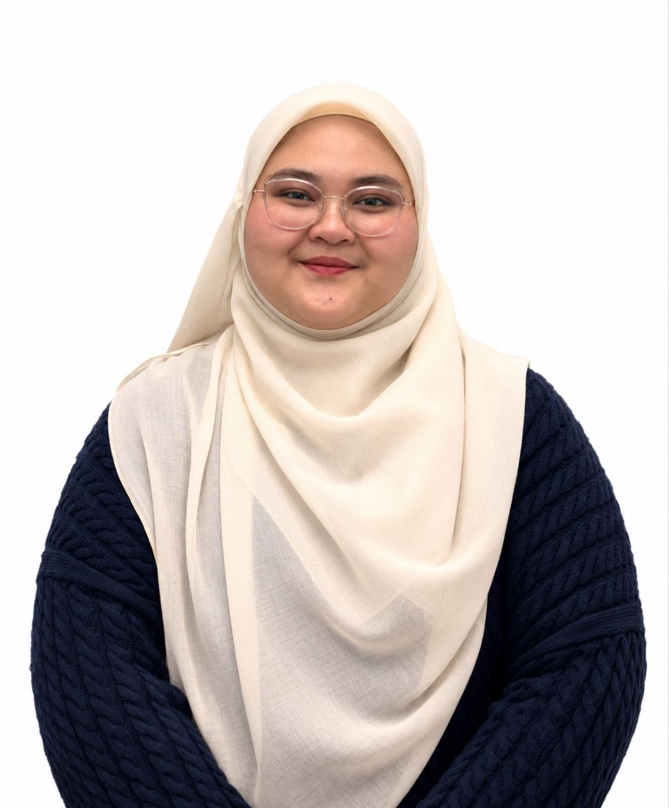
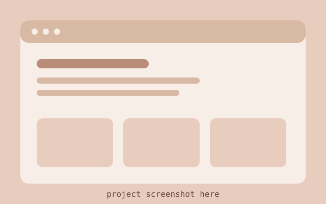

Student Management System
Final year project. A web system that automatically schedules classes and assigns teachers, backed by a MySQL database I designed and documented end to end.
Web developer, graduating December 2026
Final-year Bachelor of Information Technology (Hons) student at Universiti Tun Hussein Onn Malaysia. I build responsive websites and the MySQL databases behind them, and I enjoy turning technical problems into tools people can actually use.

// about
I like work where the result is something a real person uses. During my internship I improved live corporate websites so they look consistent and work well on phones, tablets and desktops.
For my final year project I built a Student Management System that schedules classes and assigns teachers automatically, and I managed its MySQL database from design to documentation.
const farah = { role: "Web Developer", stack: ["PHP", "MySQL", "JavaScript", "WordPress"], graduates: "Dec 2026", lookingFor: "Junior web developer role", learning: "always" };
// experience
Feb 2026 to Aug 2026
I Concept Solutions (M) Sdn Bhd
Jun 2025 to Jan 2026
Universiti Tun Hussein Onn Malaysia
Jul 2022 to Sep 2022
Hyper Pets Center
// projects
Final year project. A web system that automatically schedules classes and assigns teachers, backed by a MySQL database I designed and documented end to end.

Internship work at I Concept Solutions. I improved responsive layouts and interface consistency on several company websites and supported production web applications.
// skills
Intermediate
Intermediate
Soft skills
// education & more
// contact
I'm graduating in December 2026 and looking for a junior web developer role. The quickest way to reach me is email.
Based in Puchong, Selangor. References available on request.